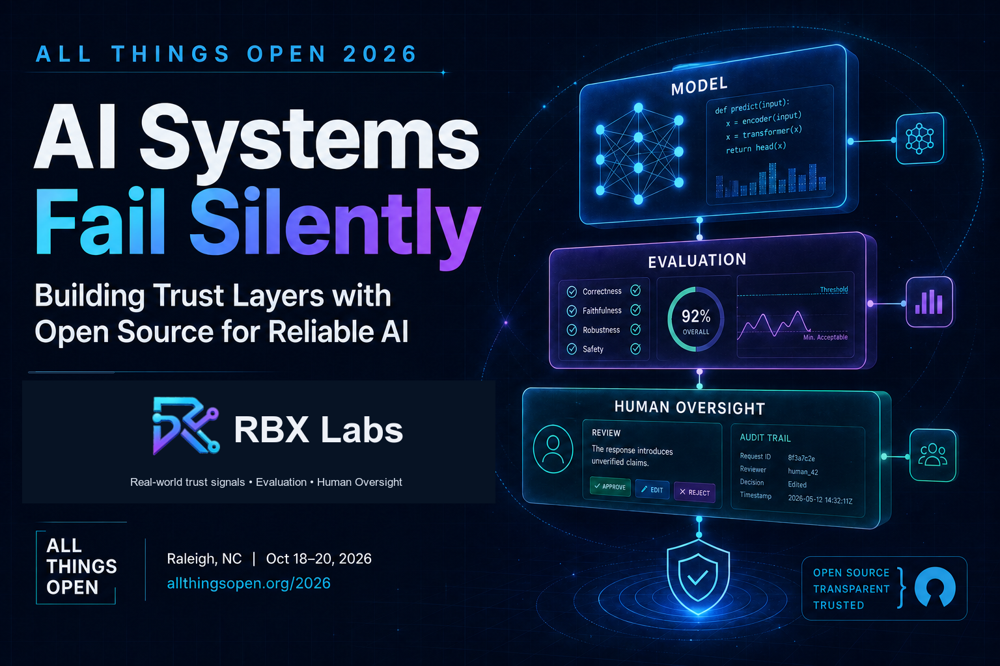
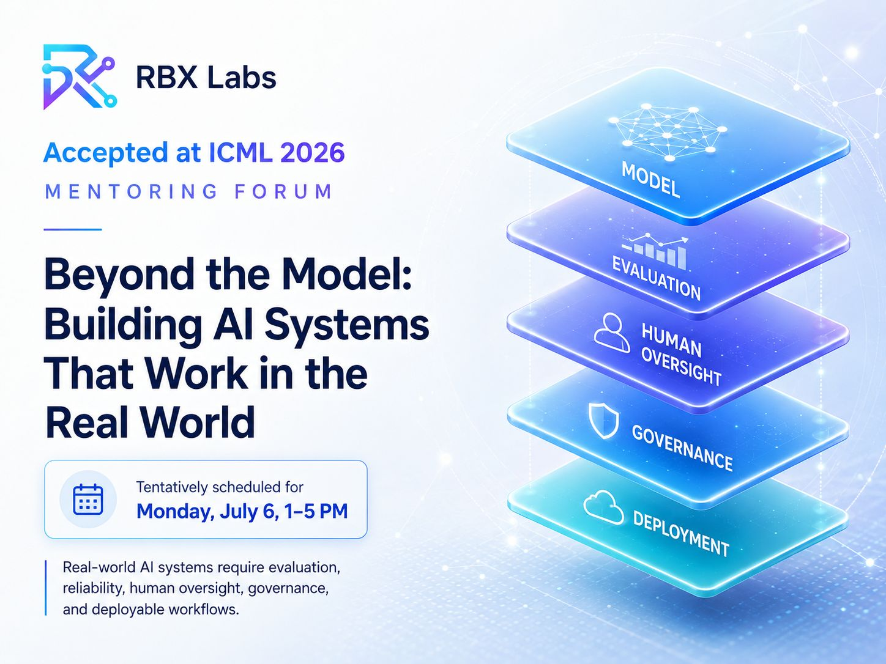

AI Training
Your team knows AI exists. They don't know how to use it yet.
RBX Labs runs practical AI training for teams that need more than inspiration. The format depends on how fast you need adoption to show up in the work.
Sessions are workflow-specific and built around what your team needs to do next, not generic AI trends.
Credential
Practical training backed by institutional delivery
Why trust this training
Practical delivery, not generic inspiration.
Every format is built around a team, a workflow, and a usable outcome.
AudienceProduct, operations, founders, and technical teams
OutcomeWorkflow map, prototype, decision framework, or adoption rhythm
FacilitatorFounder-led delivery informed by Microsoft, NASA, Ericsson, Intel, and Stanford teaching
Three ways to train the team
Pick the format based on how much change the team needs, how cross-functional the work is, and whether you need momentum or habit formation.
See the Trustworthy Agentic AI Workshop → See the AI Reliability Review → See the AI Judgment Workshop →
01
Workshop
Half-day session for one team
Best for a specific workflow focus such as prompting, evaluation, product discovery, or AI-assisted execution.
Leaves the team with a shared mental model, a concrete workflow map, and immediate next actions.
02
Sprint
2-3 days for cross-functional teams
Best when product, operations, and leadership need alignment plus something tangible by the end.
Leaves the team with a working prototype, decision framework, and a clearer path to pilot or rollout.
03
Program
4-8 weeks for adoption and habit formation
Best when the goal is not just exposure to AI, but making it part of how the team actually operates.
Leaves the team with repeatable routines, coaching touchpoints, and usage patterns that stick.
Supporting evidence
Selected teaching and talks
Public teaching, talks, and sessions that show the approach in practice. These examples support the training offer; they are not the offer itself.

Featured curriculum
Stanford Code in Place 2026
A banner-style showcase for the Stanford Code in Place learning track, adapted into a clean Week 1 to Week 6 training flow.
The page now gives this program a dedicated training feature instead of a single embed. Learners can jump into Weeks 1 through 6 immediately, with the full path visible as they scroll.

All Things Open 2026
Event
AI Systems Fail Silently — Building Trust Layers with Open Source for Reliable AI
Open-source trust layers for AI systems that fail silently, with real-time scoring across model confidence, retrieval quality, and contextual signals.
Open All Things Open
IEEE WF-PST 2026
Tutorial
Trustworthy Agentic AI for Public Safety
Tutorial on building agentic AI systems for public safety operations with evaluation gates, escalation paths, and human review built into the workflow.
Open poster
FOSSY 2026
Event
From Prompts to Runtime Signals: Making Open-Source AI Systems More Trustworthy
FOSSY 2026 session on building open-source AI systems that are easier to evaluate, monitor, and trust in production.
Open FOSSY schedule
ICML 2026 Mentoring Forum
Event
Beyond the Model: Building AI Systems That Work in the Real World
Accepted at ICML 2026 to discuss the evaluation, reliability, governance, human oversight, and deployment work needed for real-world AI systems.
Open poster
YSpace York University
Event
Hiring Your First AI Employee
How founders can delegate real work to AI tools, workflows, and agents without losing judgment, trust, or control. The session page bundles the Gamma deck and LinkedIn post.
Open session page
Toronto Product Management Association
Event
Practice PMing multiple products
Hands-on perspective for teams managing several products at once and deciding where to focus attention.
Open LinkedInNext Step
Plan the session around the team and the workflow
Use a short planning call to decide whether a workshop, sprint, or longer program makes sense for your team.
If there is a real training need, the session should end with the right format, audience, and outcome.